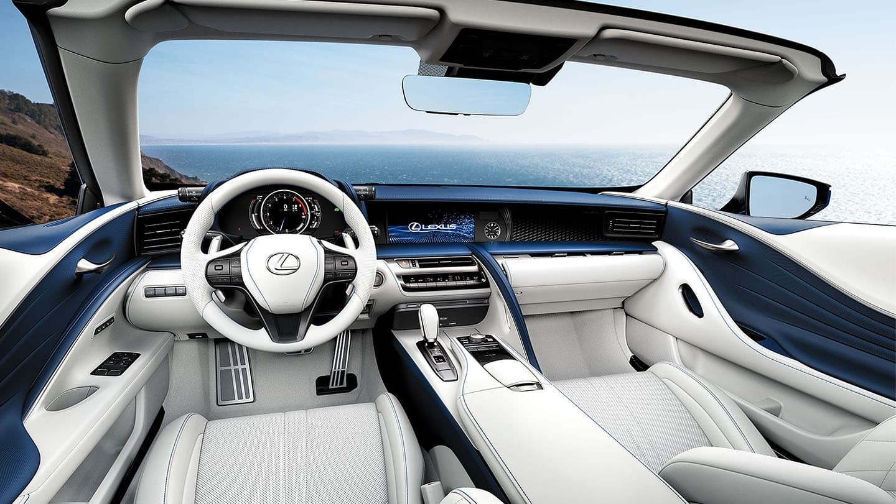

My Automotive Story

My interest in cars has grown over time as I have learned more about how different vehicles are designed and how they perform. At first, I mainly paid attention to how cars looked, but I have become much more interested in engines, drivetrains, technology, reliability, and the overall driving experience.
I especially like cars that can be used every day while still offering strong performance and a premium feel. For me, a great car does not have to be the fastest car available. I am more interested in a balance between performance, comfort, reliability, and practicality.
Owning and driving my Mazda CX-5 has also helped me understand what I personally value in a vehicle. Reliability and comfort matter much more when a car is something you use every day.
As I continue learning about cars, I want to better understand how engines, transmissions, suspension systems, and other components affect the way a car feels. This website gives me a place to organize some of what I am learning.